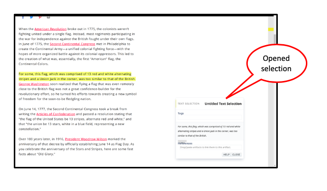
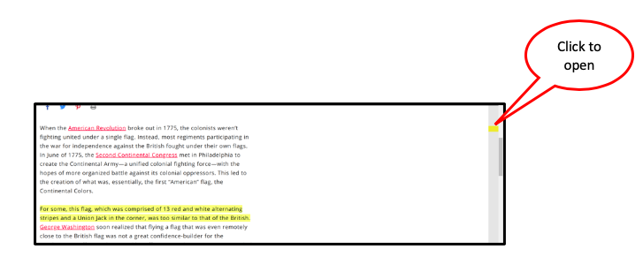

- A nub for your seletion appears in the gutter on the right side of your webpage
- Clicking on the nub shows you the selection you have made, as well as the highlighted text on the page. 
- The selection also appears in the sidebar on the left side of the webpage.
- To access the sidebar, click on the handle on the left side of your webpage.


 screenshot 2, crop to show selection and side bar closed
there is another screenshot showing what happens when you click on the selection in the sidebar
screenshot 2, crop to show selection and side bar closed
there is another screenshot showing what happens when you click on the selection in the sidebar